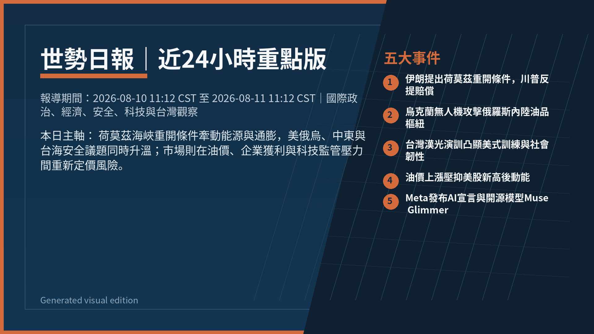

本週主文
荷莫茲、俄烏與台海韌性：三條風險線如何同時牽動市場
這不是五則彼此獨立的新聞。能源航道、歐亞戰場、美中科技管制與台灣防衛韌性正在同時改變企業成本、政府決策與市場預期。

重點摘要
- 荷莫茲與紅海航運風險讓能源價格重新成為通膨核心變數。
- 俄烏戰場若持續引入北韓飛彈與兵力，歐洲安全會更深地連到東北亞。
- 美中晶片管制正從出口許可轉向供應鏈驗證，台灣代工鏈會被捲入更嚴格的合規環境。
- 台灣漢光演習的重點已不只是武器展示，而是軍民協同、通訊備援與灰色地帶應對。
一、先看風險地圖，不先看標題
國際新聞最大的問題不是資訊太少，而是每則消息都看起來像獨立事件。真正影響決策的是事件之間的傳導路徑：戰爭如何推動油價，油價如何推動通膨，通膨如何改變央行政策，最後再回到企業成本與民生價格。
本週的主線可以分成三層。第一層是能源航道，荷莫茲與紅海的風險直接牽動保險、運費與原油價格。第二層是安全外溢，俄烏戰爭與北韓軍事支援讓歐洲和東北亞安全議題連在一起。第三層是科技供應鏈，美國對高階晶片流向中國的查核會推高整條鏈的合規成本。
二、荷莫茲風險為何會變成全球通膨問題
荷莫茲海峽不是單純的區域安全議題。當航道風險升高，市場會先反映在油價與航運保險，接著傳導到航空、化工、貨運、電力與民生物價。對亞洲進口能源國家來說，這條傳導鏈更短，反應也更快。
這也是為什麼中東談判的每一個訊號都會被金融市場放大。若能源價格再次推高通膨，央行降息空間會縮小，股市估值與企業融資成本也會受到壓力。
三、俄烏戰場正在連到東北亞
如果北韓提供飛彈、彈藥或人力支援俄羅斯，俄烏戰爭就不只是歐洲問題。北韓會取得實戰資料，俄羅斯會取得消耗戰資源，而日韓與台灣會更關注這些經驗是否回流到東北亞軍事部署。
這種連動會改變盟友協調方式。歐洲國家不能只把北韓視為亞洲議題，亞洲國家也不能只把俄烏戰爭視為遙遠戰場。
四、晶片管制進入驗證鏈階段
美國的高階晶片管制正在從「誰買了什麼」轉向「晶片最後如何被使用」。這表示代工、雲端資料中心、前台公司、記憶體採購與跨境轉售都會成為政策關注點。
對台灣供應鏈而言，這不只是一個出口規則問題，而是客戶審查、文件留存、終端用途確認與聲譽風險的總和。未來企業的競爭力會包括合規能力。
五、台灣漢光演習的核心是韌性
台灣防衛敘事正在從「能不能打」擴大到「能不能撐」。海巡艦可快速掛載飛彈、無人機與反無人機演練、行動網路降速測試、民間動員與通訊備援，都是在處理灰色地帶和封鎖情境。
這類演練的政治訊號很明確：台灣要讓對手看到攻擊成本，也要讓盟友看到社會有承受壓力的能力。
六、市場會先問三個問題
第一，油價是否只是短期震盪，還是會重新推動通膨預期。第二，美中晶片管制是否會讓企業延後投資或調整供應鏈。第三，台海與俄烏風險是否會讓防衛、能源與半導體資本支出同步升高。
投資人不一定會立刻重新定價所有風險，但當幾條風險線同時收緊，市場會先降低對政策寬鬆與企業利潤的樂觀假設。
下週觀察清單
- 能源：布蘭特油價是否穩定高於近期區間，以及航運保險報價是否上升。
- 政策：美國商務部是否補強高階晶片終端用途查核。
- 安全：俄羅斯是否擴大使用北韓彈道飛彈或相關人力支援。
- 台灣：漢光演習後續是否釋出民防、通訊與無人機整合成果。